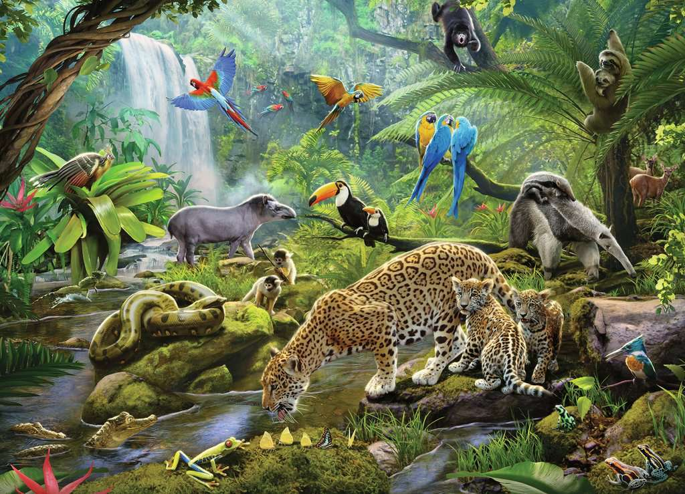
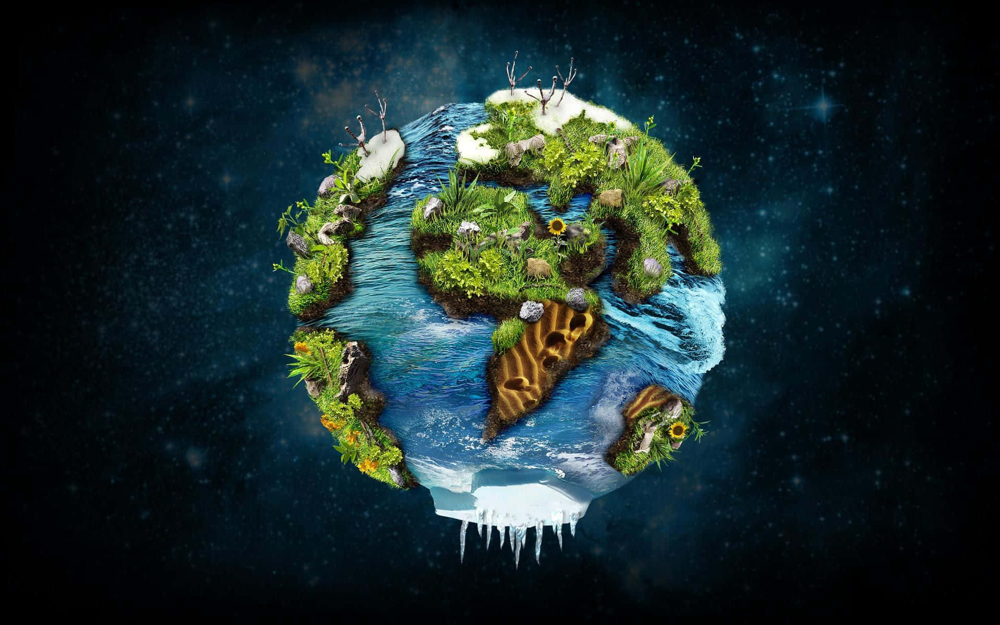

Introduction
Biodiversity includes the wide range of life on Earth, covering various plants, animals, microorganisms, the genetic diversity within them, and the ecosystems they create. This variety is essential for the ability of life on Earth to bounce back and adjust to changes and disturbances, ensuring ecosystems can endure and recover. Ecosystems are living communities of plants, animals, and microorganisms, along with their abiotic surroundings, functioning as a cohesive unit. These systems can range in size significantly, from as small as a pond to as large as a forest or the entire planet. Ecosystems play a crucial role by providing necessary services like cleaning air and water, controlling climate, maintaining soil quality, pollinating plants, and cycling nutrients, all of which are important for human survival and health. The link between biodiversity and ecosystems plays a key role in maintaining environmental stability. Decreased biodiversity can cause ecosystem deterioration, decreasing their capacity to offer vital services and making them more susceptible to external factors such as climate change. Hence, safeguarding biodiversity and preserving healthy ecosystems are indispensable for the longevity of life on Earth.
Biodiversity
Biodiversity, or biological diversity, refers to the variety and variability of life on Earth, encompassing different species of plants, animals, fungi, and microorganisms, as well as the genetic differences within these species and the ecosystems they form. It includes species diversity, genetic diversity, and ecosystem diversity. Biodiversity is crucial for ecological stability, as diverse ecosystems are more resilient to disturbances and can recover more quickly while maintaining their functions. It supports essential ecosystem services such as pollination, water purification, climate regulation, and soil fertility, which are vital for human survival and well-being. Biodiversity also has significant economic value, with many industries like agriculture, pharmaceuticals, and tourism relying on diverse biological resources. Additionally, it holds cultural and recreational value, enriching our lives with aesthetic and cultural experiences and offering opportunities for tourism and recreation. Scientifically, biodiversity is a source of knowledge and innovation, leading to new discoveries and technologies. However, biodiversity faces threats from habitat loss, climate change, pollution, overexploitation, and invasive species. Conservation efforts, such as establishing protected areas, promoting sustainable practices, restoring degraded ecosystems, and implementing protective laws and policies, are essential to preserve biodiversity. Raising awareness and educating communities about its importance is also crucial. Protecting and conserving biodiversity is fundamental for maintaining the balance of nature and ensuring a sustainable future for all life on Earth.
Ecosystems
An ecosystem is a vibrant group of organisms that interact with each other and their environment in a particular area. It includes every biological, physical, and chemical element of the environment, operating as a intricate and interrelated system. Ecosystems vary in size, from tiny like a pond or a tree, to enormous like a desert or a rainforest. Every ecosystem contains a distinct mix of species such as plants, animals, fungi, and microorganisms that are suited to the conditions of their environment. These organisms depend on one another and their environment to survive, creating complex food webs and nutrient cycles. Ecosystems offer vital services like controlling climate, cleansing air and water, recycling nutrients, and offering habitats for wildlife. Human activities can have a negative impact on ecosystems by causing habitat destruction, pollution, climate change, and introducing invasive species, resulting in the loss of biodiversity and the degradation of ecosystems. Conservation initiatives focus on safeguarding and repairing ecosystems, guaranteeing their toughness and capacity to keep offering crucial services for both the environment and people. Comprehending and protecting ecosystems are essential for upholding the well-being of our planet and supporting life on Earth.
